Workshop 2: July 3rd-7th, 2023
Archive of the program website
Theme: “Machine Learning & Predictive Inference”
Dates: July 3rd-7th, 2023
Location: Noble Conference Center, Eldoret, Kenya
Audience
From July 3rd to July 5th, we held a three-day course on machine learning and predictive inference in partnership with NAMBARI, the Moi-Brown Partnership for HIV Biostatistics Training. We also held a two-day optional working group for social determinants from July 6th-7th.
Attendees: 44 trainees from multiple institutions in Kenya and across the African continent attended all days, including professional statisticians, data analysts, informatics professionals, university faculty members, and graduate students in statistics, informatics, or data science working at universities, research centers, government ministries or NGOs focused on the analysis of health data.
Operations: Tuition-free and selection by application only. The workshop was held entirely in person at the Noble Conference Center in Eldoret, Kenya. During the short course from July 3rd-5th, trainees’ days consisted of a combination of lectures, presentations/case studies, and hands-on activities. The optional social determinants working group consisted of discussions surrounding relevant social determinants research and how to continue working on the development of a database which led to the formation of the working group.
Workshop topics
- Machine learning background and overview
- Machine learning workflows (training, testing, evaluation)
- Specific machine learning algorithms (Random forest, CART, etc.)
- Real-world challenges with machine learning implementation (generalizability, distribution shift, algorithmic fairness, etc.)
- Social Determinants and ML
Funding and financial support is provided by the Fogarty International Center of the US National Institutes of Health (NIH) through grant U2RTW012121.
Sessions led by Rumi Chunara, PhD; Ann Mwangi, PhD, and Joseph Hogan, ScD. Hands-on sessions facilitated by Amos Okutse, MSc, and Rophence Ojiambo, MSc.
Workshop slides
- NAMBARI-DSSD Machine Learning Workshop Real-World Challenges: Generalizability (Rumi Chunara, PhD)
- NAMBARI-DSSD Workshop Algorithmic Fairness Overview (Rumi Chunara, PhD)
- Social Determinants Working Group: Social Determinants Theory (Rumi Chunara, PhD)
- Social Determinants Working Group: Next Steps (Rumi Chunara, PhD)
Photos from the workshop
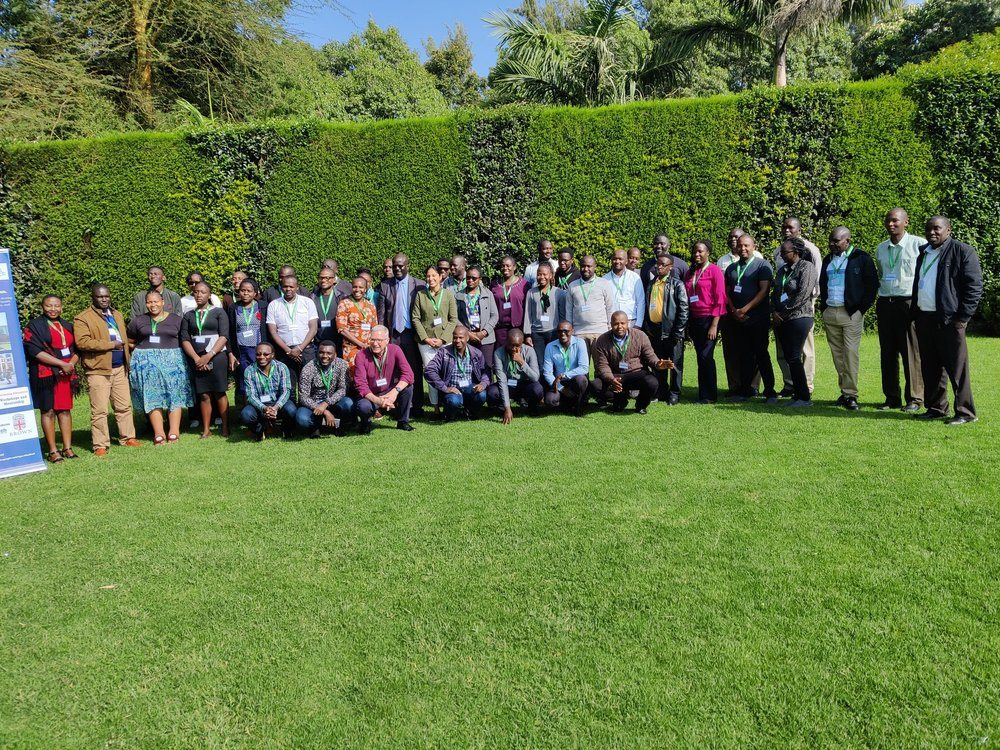
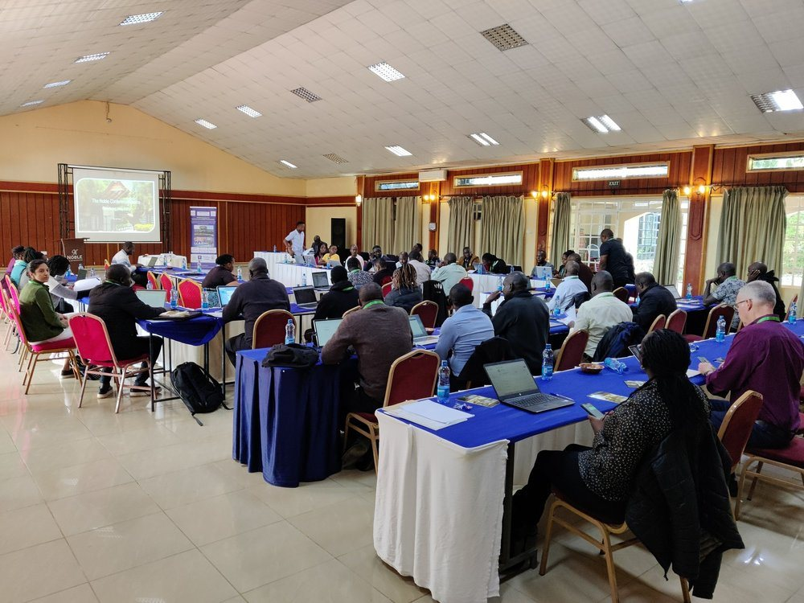
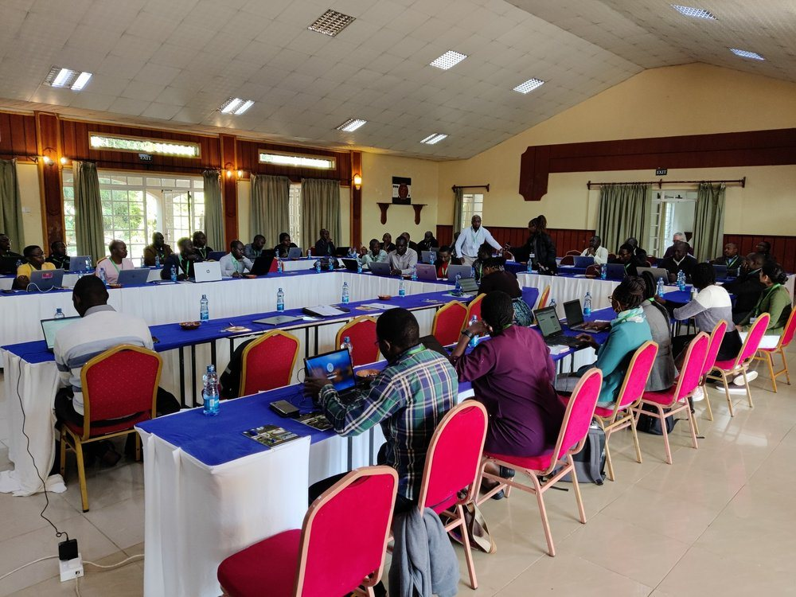
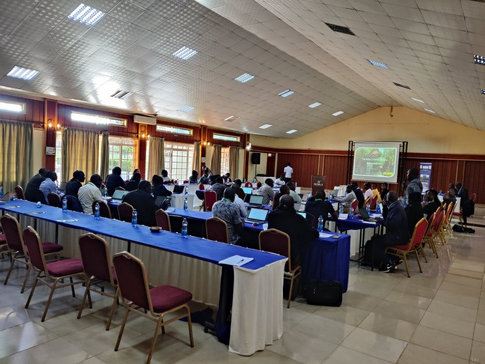
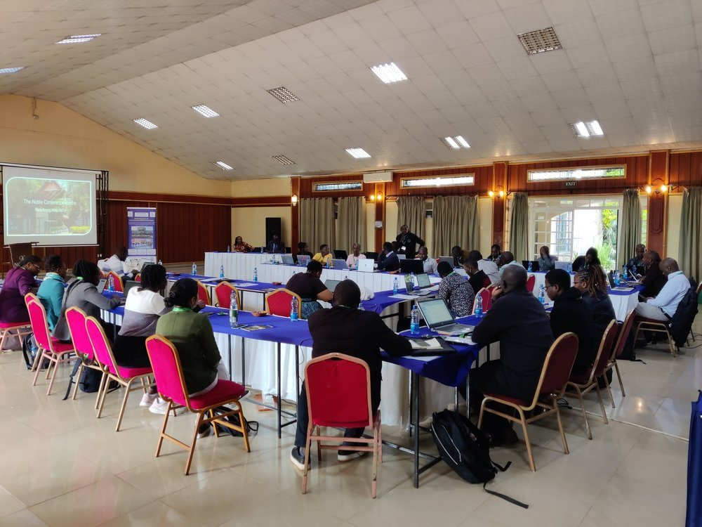
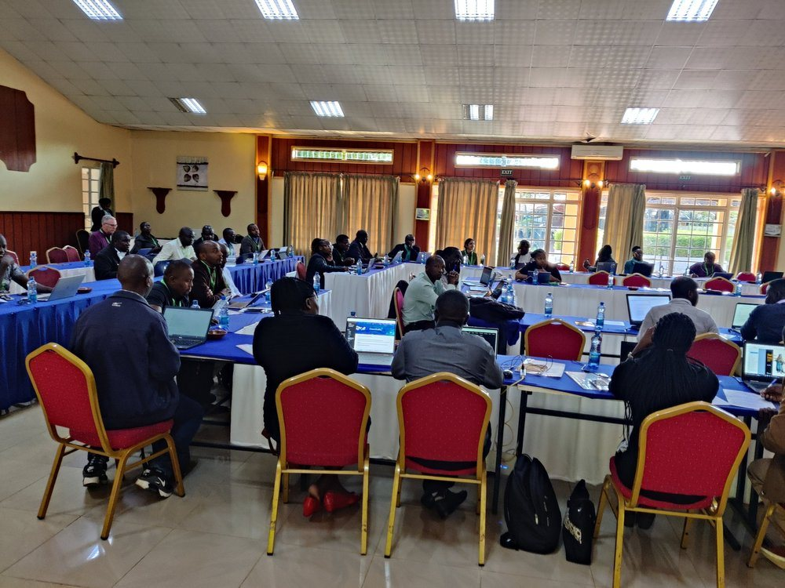
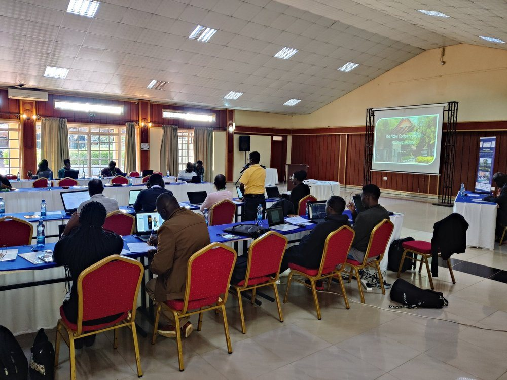

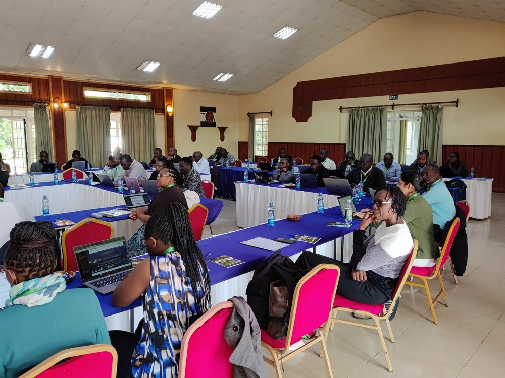
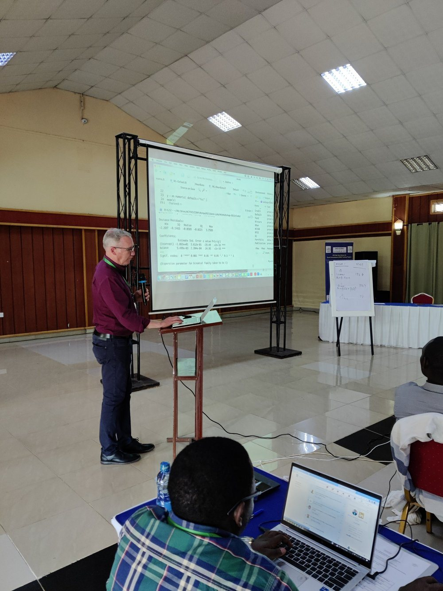
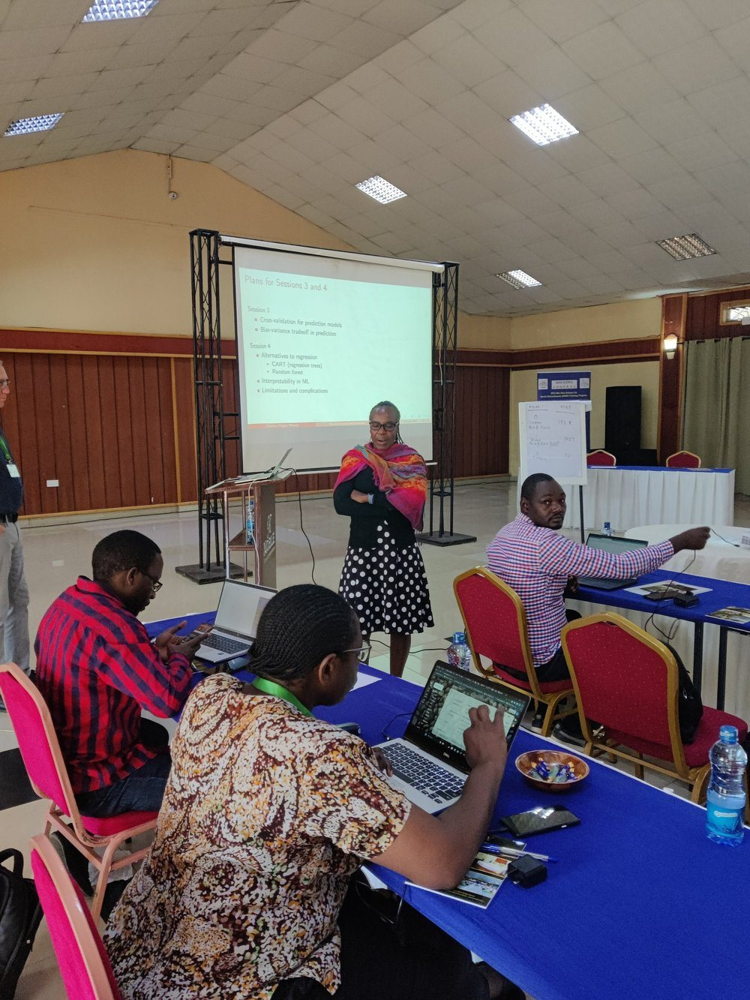
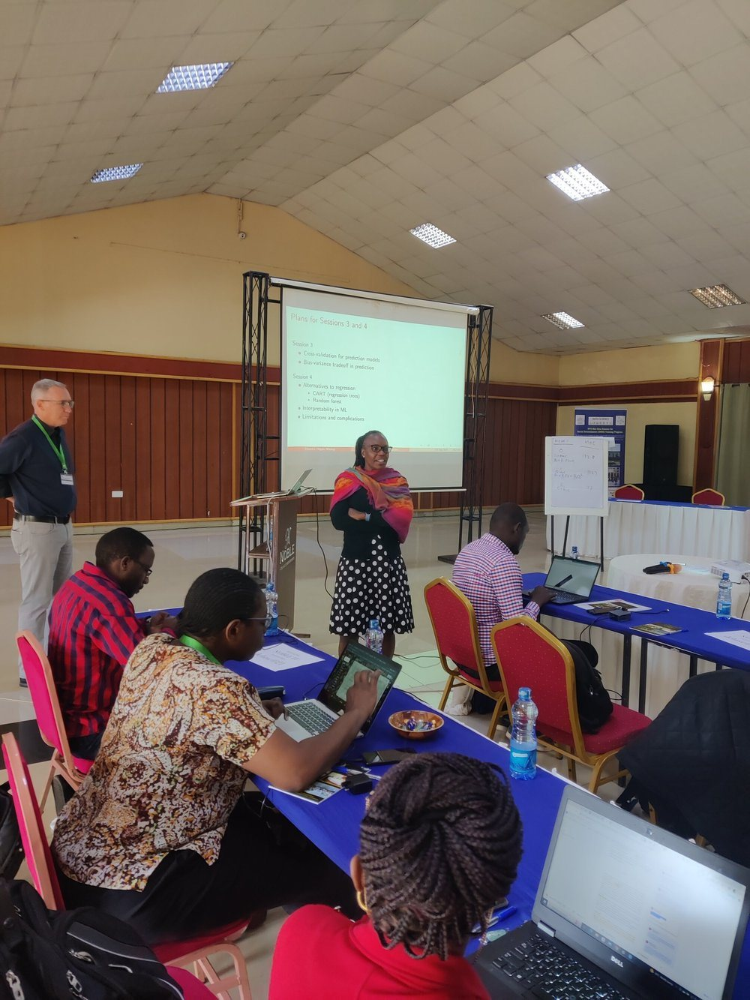
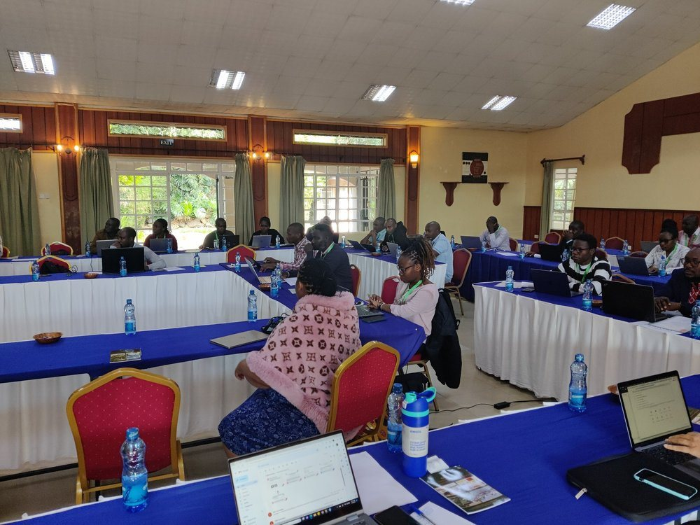
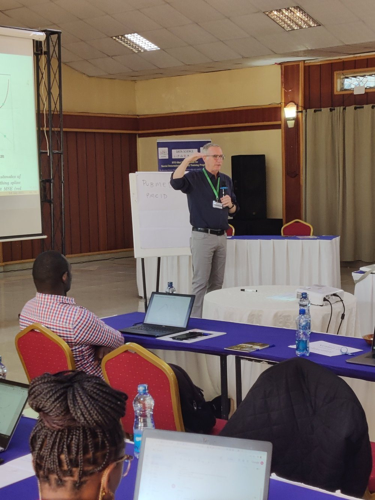